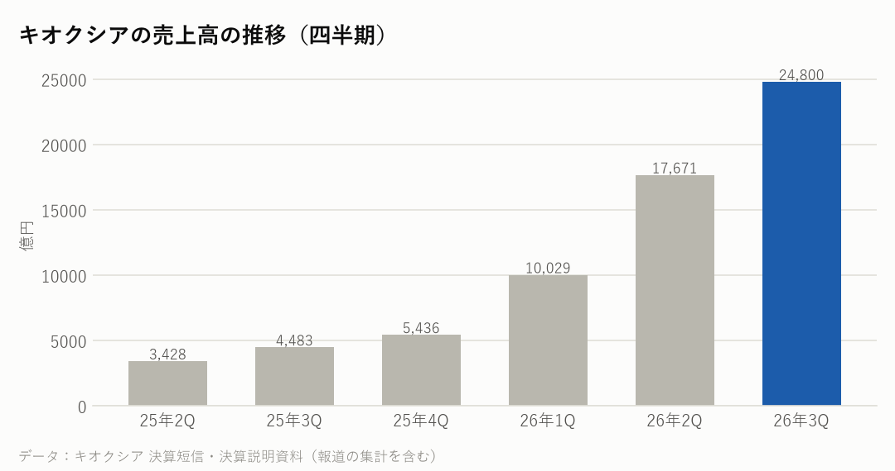
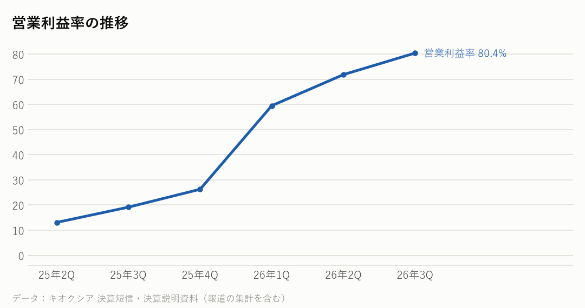

285A｜2026年7〜9月期の決算｜決算発表 2026年10月30日
キオクシアの決算：売上は5.5倍なのに、なぜ株価は急落した？――NANDの値上がり一服の見通し
7〜9月期の売上収益は2兆4,800億円で、前年同期の約5.5倍、前の四半期より40%増えた。営業利益は1兆9,947億円で、売上に対する割合（営業利益率）は80.4%だった。NANDフラッシュの値上がりと出荷量の増加が売上を押し上げた。10〜12月期の売上は2兆5,000億円と、ほぼ横ばいの見通しを示した。
主な数字（2026年7〜9月期）
| 今回 | 前年同期 | 前年比 | |
|---|---|---|---|
| 売上高 | 24,800億円 | 4,483億円 | +453.2% |
| 営業利益 | 19,947億円 | 859億円 | +2222.1% |
| 営業利益率 | 80.4% | 19.2% | |
| 純利益 | 13,557億円 | 407億円 | +3231.0% |
用途ごとの売上（7〜9月期）
| 部門 | 売上 | 前四半期比 |
|---|---|---|
| SSD・ストレージ（データセンター・PCなど） | 1兆6,160億円 | +37.6% |
| スマートデバイス（スマホなど） | 7,889億円 | +50.1% |
| その他 | 752億円 | ― |

会社の見通し（10〜12月期）
| 売上収益（10〜12月期） | 2兆5,000億円（前四半期比 +0.8%） |
|---|---|
| 営業利益（10〜12月期） | 1兆9,950億円 |
| 純利益（10〜12月期） | 1兆3,600億円 |
| 前提の為替 | 1ドル＝157円（7〜9月期は161円） |
- 10〜12月期は、出荷量（記憶容量ベース）が前の四半期とほぼ同じになる見通し。一部の製品が7〜9月期に前倒しで出荷されたことと、データセンター向けなど作るのに時間がかかる製品の出荷の一部が1〜3月期にずれることを理由に挙げた（決算説明より）。
- 1〜3月期は、出荷量の伸びが再び大きくなる見通しとしている（決算説明より）。
- 前提の為替は1ドル＝157円で、7〜9月期の161円より円高。円高で営業利益が約550億円減る一方、販売価格の上昇で補う想定としている（報道より）。
もうけの力

日本の半導体関連の会社と比べると
各社の直近の四半期。在庫の日数は「在庫が売上原価の何日分か」。
| 会社 | 決算期末 | 売上高 | 前年比 | 粗利益率 | 営業利益率 | 設備投資/売上 | 在庫の日数 |
|---|---|---|---|---|---|---|---|
| キオクシア | 2026-09 | 24,800億円 | +453.2% | ― | 80.4% | ― | ― |
| 東京エレクトロン | 2026-09 | 9,351億円 | +48.4% | 47.8% | 31.6% | ― | ― |
| アドバンテスト | 2026-09 | 4,777億円 | +81.7% | ― | 55.9% | ― | ― |
| イビデン | 2026-09 | 1,393億円 | +42.1% | ― | 23.9% | ― | ― |
| 村田製作所 | 2026-09 | 5,885億円 | +20.9% | ― | 25.1% | ― | ― |
NasdaqWhy の視点：データから読み取れる注目点
決算資料と各社の公式データを並べて読み取れることです。将来を予想するものではありません。
- 【業績と株価を分けて読む】7〜9月期は過去にない大きな増収増益だったが、決算の翌日、キオクシアの株価は東京で15.8%下がった（報道より）。材料として挙がったのは、10〜12月期の売上がほぼ横ばい、営業利益も7〜9月期と同じくらいの見通しで、アナリストの予想を下回ったこと。値上がりの勢いが落ち着くとの説明もあった。逆の見方として、会社は2027年の生産能力はすでに売り切れと説明している。まだ分からないのは、1〜3月期に出荷が再び伸びるかどうかで、次の決算で確かめたい。
- 7〜9月期の平均販売単価は、ドル建てで前の四半期より20%台半ば上がり、出荷量（記憶容量ベース）は10%台前半増えた（決算説明資料より）。売上の伸びの多くは、値上がりによるもの。
- 用途別では、SSD・ストレージが1兆6,160億円で売上の約65%を占め、前の四半期より4,413億円増えた。
- 2026年度の設備投資は、5,000億〜6,000億円程度に増やす。翌年度分の一部を前倒しする形で、3年間の合計は大きく変えないとしている（報道より）。
- 会社は、2027年の生産能力はすでに売り切れ（SOLD OUT）の状態だと説明した（報道より）。NANDを使うデータセンター向けSSDの需要は、大手クラウドのAI投資とつながっている。
- 営業利益率は80.4%で、1年前の19.2%から大きく上がった。メモリーは値段の上下が大きく、利益率も大きく動く。
次に確認したい決算・予定
- マイクロンの決算（12月中旬〜下旬の見込み）：同じメモリーの会社で、値上がりが続いているか。
- キオクシアの次の決算（2027年1月下旬〜2月の見込み）：10〜12月期が見通しどおり横ばいだったか、1〜3月期の出荷の見通し。
- 大手クラウドの設備投資：データセンター向けSSDの需要のもとになる投資の動き。
関連リンク
出典：キオクシアホールディングス 決算短信・決算説明資料（2026年10月30日）、報道（EE Times Japan・Investing.com など）、TIKR（株価の動き）
※情報提供のみ。投資判断はご自身でお願いします。※Nasdaq Whyは独立した情報メディアです。Nasdaq, Inc.およびその関連会社とは関係ありません。